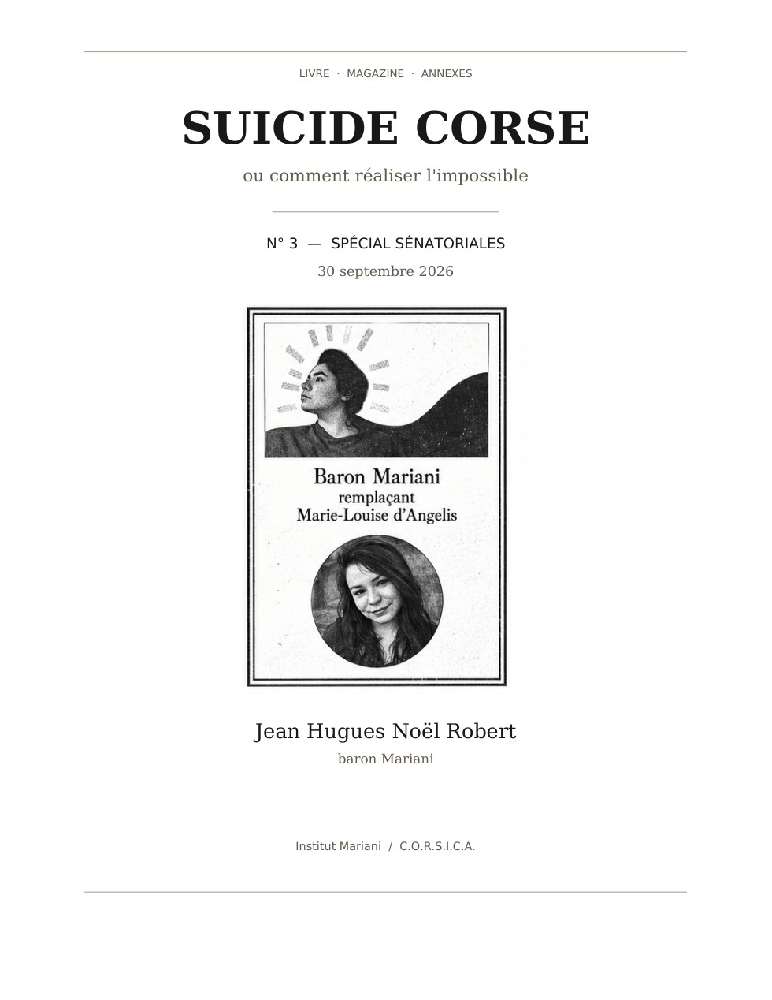

ou comment réaliser l'impossible
Vous avez une trace ou un souvenir
Vous avez connu Marie-Louise, même brièvement, ou vous détenez une information, un document, une photographie, un message ou un souvenir susceptible d'éclairer son parcours.
Il n'existe pas de « petit » témoignage. Quelques mots, une date, un lieu ou un nom peuvent suffire à ouvrir une piste. Votre témoignage peut compter.
Une transmission peut rester confidentielle : recevoir, conserver, exploiter et publier sont quatre opérations distinctes.
Vous avez une compétence utile
Vous n'avez pas besoin d'avoir connu Marie-Louise, ni même de connaître la Corse. Juristes, chercheurs, statisticiens, historiens, archivistes, développeurs et lecteurs critiques peuvent aider l'enquête.
Une contribution peut apporter une analyse, une source, une méthode, du code, une vérification ou une contradiction utile. Votre compétence peut compter.
Deux voies sont ouvertes : GitHub pour le travail public et traçable, courriel pour les échanges privés ou sensibles.
Voir les questions ouvertes de l'enquête — Préparer un brouillon avec le Guide (non envoyé)
Suicide Corse est une enquête à deux échelles — sur le destin de Marie-Louise, et sur celui de la Corse. Les éditions gelées restent consultables telles qu'elles ont été scellées ; les travaux en rédaction restent distincts jusqu'à leur propre publication.
Deux Livres vivants, un même point de passage
Le dossier sénatorial contemporain vient de rencontrer une archive familiale de 1863 : à plus de cent soixante ans d'intervalle, deux barons Mariani constituent en Corse un dossier de contestation électorale.
Il ne s'agit pas d'une répétition causale. Les régimes, les positions institutionnelles et les mécanismes diffèrent. Le rapprochement devient plutôt un pivot documentaire entre Suicide Corse, qui part de l'effectivité présente des capacités d'agir, et Rise & Fall of the Mariani Family, qui suit ces capacités dans la profondeur historique.
En préparation — non gelée
Édition close

Entre deux éditions, le travail avance dans le Corpus source, publiquement et de façon traçable. Plusieurs façons de le suivre, sans attendre le prochain numéro :
UNKNOWN, ce
qui est volontairement différé.